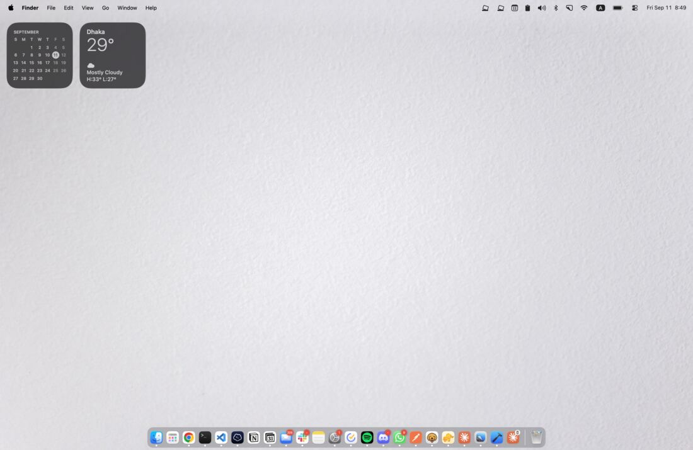

Free · Open source · Menu bar
Your desktop, on a hinge.
Bendd reads your Mac's real lid angle sensor and renders your actual desktop tilting shut as you close the lid, fading to black as the screen goes edge-on, inspired by the iPhone Duo fold concept animations.
Apple Silicon · macOS 14+ · not notarized yet, see install notes

↓ scroll, the hinge follows you · real captures from the app, not a mockup
How it works
Three things happening sixty times a second.
No canned animation. Bendd is actually looking at the hinge and actually looking at your screen.
01 · SENSE
Read the hinge
Polls the Mac's lid angle sensor, the same one behind display auto-dim, at up to 60Hz while the lid is moving.
02 · CAPTURE
See the desktop
Grabs the live screen via ScreenCaptureKit, zero-copy straight onto the GPU. Nothing is written to disk or sent anywhere.
03 · RENDER
Bend it
A Metal shader tilts the captured frame around the hinge, adding blur and shadow that scale with how closed the lid is.
Styles
Pick how it folds.
Hover a card. Each style is a different balance of blur, shadow, and color.
Silk
Soft focus, light shadow. The fold feels gentle.
Shade
Sharper edges, deep shadow. The fold feels heavy.
Frost
Blur, shadow, and a wash of desaturation together.
Requirements
What it needs to run.
- Chip
- Apple Silicon
- Models
- MacBook Air/Pro (M2+), 16" MacBook Pro (2019)
- OS
- macOS 14 or later
- Permission
- Screen Recording
- Price
- $0
- License
- MIT
Nothing is recorded, saved, or sent anywhere. The captured desktop exists only as a texture on your own GPU, for one frame, to draw the bend. Bendd has no network code at all.
Get Bendd
Download the latest build.
Ships as a DMG straight from GitHub Releases, free and open source.
Download for MacNot notarized by Apple yet. The build is ad-hoc signed, so on first launch, double-clicking will say it's damaged. Instead, right-click Bendd.app in Applications and choose Open, then confirm in the dialog. Only needed once.
Still refuses to open? Run xattr -cr /Applications/Bendd.app in Terminal.